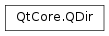

QDir¶
Synopsis¶
Functions¶
- def
__eq__(dir) - def
__ne__(dir) - def
__reduce__() - def
absoluteFilePath(fileName) - def
absolutePath() - def
canonicalPath() - def
cd(dirName) - def
cdUp() - def
count() - def
dirName() - def
entryInfoList([filters=QDir.NoFilter[, sort=QDir.NoSort]]) - def
entryInfoList(nameFilters[, filters=QDir.NoFilter[, sort=QDir.NoSort]]) - def
entryList([filters=QDir.NoFilter[, sort=QDir.NoSort]]) - def
entryList(nameFilters[, filters=QDir.NoFilter[, sort=QDir.NoSort]]) - def
exists() - def
exists(name) - def
filePath(fileName) - def
filter() - def
isAbsolute() - def
isEmpty([filters=QDir.Filters(AllEntries | NoDotAndDotDot)]) - def
isReadable() - def
isRelative() - def
isRoot() - def
makeAbsolute() - def
mkdir(dirName) - def
mkpath(dirPath) - def
nameFilters() - def
operator=(path) - def
operator[](arg__1) - def
path() - def
refresh() - def
relativeFilePath(fileName) - def
remove(fileName) - def
removeRecursively() - def
rename(oldName, newName) - def
rmdir(dirName) - def
rmpath(dirPath) - def
setFilter(filter) - def
setNameFilters(nameFilters) - def
setPath(path) - def
setSorting(sort) - def
sorting() - def
swap(other)
Static functions¶
- def
addResourceSearchPath(path) - def
addSearchPath(prefix, path) - def
cleanPath(path) - def
current() - def
currentPath() - def
drives() - def
fromNativeSeparators(pathName) - def
home() - def
homePath() - def
isAbsolutePath(path) - def
isRelativePath(path) - def
listSeparator() - def
match(filter, fileName) - def
match(filters, fileName) - def
nameFiltersFromString(nameFilter) - def
root() - def
rootPath() - def
searchPaths(prefix) - def
separator() - def
setCurrent(path) - def
setSearchPaths(prefix, searchPaths) - def
temp() - def
tempPath() - def
toNativeSeparators(pathName)
Detailed Description¶
The
PySide2.QtCore.QDirclass provides access to directory structures and their contents.A
PySide2.QtCore.QDiris used to manipulate path names, access information regarding paths and files, and manipulate the underlying file system. It can also be used to access Qt’s resource system .Qt uses “/” as a universal directory separator in the same way that “/” is used as a path separator in URLs. If you always use “/” as a directory separator, Qt will translate your paths to conform to the underlying operating system.
A
PySide2.QtCore.QDircan point to a file using either a relative or an absolute path. Absolute paths begin with the directory separator (optionally preceded by a drive specification under Windows). Relative file names begin with a directory name or a file name and specify a path relative to the current directory.Examples of absolute paths:
QDir("/home/user/Documents") QDir("C:/Documents and Settings")On Windows, the second example above will be translated to
C:\Documents and Settingswhen used to access files.Examples of relative paths:
QDir("images/landscape.png")You can use the
PySide2.QtCore.QDir.isRelative()orPySide2.QtCore.QDir.isAbsolute()functions to check if aPySide2.QtCore.QDiris using a relative or an absolute file path. CallPySide2.QtCore.QDir.makeAbsolute()to convert a relativePySide2.QtCore.QDirto an absolute one.
Files and Directory Contents¶
Directories contain a number of entries, representing files, directories, and symbolic links. The number of entries in a directory is returned by
PySide2.QtCore.QDir.count(). A string list of the names of all the entries in a directory can be obtained withPySide2.QtCore.QDir.entryList(). If you need information about each entry, usePySide2.QtCore.QDir.entryInfoList()to obtain a list ofPySide2.QtCore.QFileInfoobjects.Paths to files and directories within a directory can be constructed using
PySide2.QtCore.QDir.filePath()andPySide2.QtCore.QDir.absoluteFilePath(). ThePySide2.QtCore.QDir.filePath()function returns a path to the specified file or directory relative to the path of thePySide2.QtCore.QDirobject;PySide2.QtCore.QDir.absoluteFilePath()returns an absolute path to the specified file or directory. Neither of these functions checks for the existence of files or directory; they only construct paths.directory = QDir("Documents/Letters") path = directory.filePath("contents.txt") absolutePath = directory.absoluteFilePath("contents.txt")Files can be removed by using the
PySide2.QtCore.QDir.remove()function. Directories cannot be removed in the same way as files; usePySide2.QtCore.QDir.rmdir()to remove them instead.It is possible to reduce the number of entries returned by
PySide2.QtCore.QDir.entryList()andPySide2.QtCore.QDir.entryInfoList()by applying filters to aPySide2.QtCore.QDirobject. You can apply a name filter to specify a pattern with wildcards that file names need to match, an attribute filter that selects properties of entries and can distinguish between files and directories, and a sort order.Name filters are lists of strings that are passed to
PySide2.QtCore.QDir.setNameFilters(). Attribute filters consist of a bitwise OR combination of Filters, and these are specified when callingPySide2.QtCore.QDir.setFilter(). The sort order is specified usingPySide2.QtCore.QDir.setSorting()with a bitwise OR combination ofSortFlags.You can test to see if a filename matches a filter using the
PySide2.QtCore.QDir.match()function.Filter and sort order flags may also be specified when calling
PySide2.QtCore.QDir.entryList()andPySide2.QtCore.QDir.entryInfoList()in order to override previously defined behavior.
The Current Directory and Other Special Paths¶
Access to some common directories is provided with a number of static functions that return
PySide2.QtCore.QDirobjects. There are also corresponding functions for these that return strings:
PySide2.QtCore.QDirPySide2.QtCore.QStringReturn Value PySide2.QtCore.QDir.current()PySide2.QtCore.QDir.currentPath()The application’s working directory PySide2.QtCore.QDir.home()PySide2.QtCore.QDir.homePath()The user’s home directory PySide2.QtCore.QDir.root()PySide2.QtCore.QDir.rootPath()The root directory PySide2.QtCore.QDir.temp()PySide2.QtCore.QDir.tempPath()The system’s temporary directory The
PySide2.QtCore.QDir.setCurrent()static function can also be used to set the application’s working directory.If you want to find the directory containing the application’s executable, see
QCoreApplication.applicationDirPath().The
PySide2.QtCore.QDir.drives()static function provides a list of root directories for each device that contains a filing system. On Unix systems this returns a list containing a single root directory “/”; on Windows the list will usually containC:/, and possibly other drive letters such asD:/, depending on the configuration of the user’s system.
Path Manipulation and Strings¶
Paths containing “.” elements that reference the current directory at that point in the path, “..” elements that reference the parent directory, and symbolic links can be reduced to a canonical form using the
PySide2.QtCore.QDir.canonicalPath()function.Paths can also be simplified by using
PySide2.QtCore.QDir.cleanPath()to remove redundant “/” and “..” elements.It is sometimes necessary to be able to show a path in the native representation for the user’s platform. The static
PySide2.QtCore.QDir.toNativeSeparators()function returns a copy of the specified path in which each directory separator is replaced by the appropriate separator for the underlying operating system.
Examples¶
Check if a directory exists:
dir = QDir("example") if not dir.exists(): print "Cannot find the example directory"(We could also use the static convenience function
QFile.exists().)Traversing directories and reading a file:
dir = QDir.root() # "/" if not dir.cd("tmp"): # "/tmp" print "Cannot find the \"/tmp\" directory" else: file = QFile(dir.filePath("ex1.txt")) # "/tmp/ex1.txt" if !file.open(QIODevice.ReadWrite): print "Cannot create the file %s" % (file.name())A program that lists all the files in the current directory (excluding symbolic links), sorted by size, smallest first:
from PySide2.QtCore import QDir, QCoreApplication import sys app = QCoreApplication(sys.argv) directory = QDir() directory.setFilter(QDir.Files | QDir.Hidden | QDir.NoSymLinks) directory.setSorting(QDir.Size | QDir.Reversed) for entry in directory.entryInfoList(): print "%s %s" % (entry.size(), entry.fileName())
-
class
PySide2.QtCore.QDir(arg__1)¶ -
class
PySide2.QtCore.QDir([path=""]) -
class
PySide2.QtCore.QDir(path, nameFilter[, sort=QDir.SortFlags(Name | IgnoreCase)[, filter=QDir.AllEntries]]) Parameters: - filter –
PySide2.QtCore.QDir.Filters - sort –
PySide2.QtCore.QDir.SortFlags - path – unicode
- nameFilter – unicode
- arg__1 –
PySide2.QtCore.QDir
Constructs a
PySide2.QtCore.QDirobject that is a copy of thePySide2.QtCore.QDirobject for directorydir.See also
PySide2.QtCore.QDir.operator=()Constructs a
PySide2.QtCore.QDirpointing to the given directorypath. If path is empty the program’s working directory, (“.”), is used.See also
Constructs a
PySide2.QtCore.QDirwith pathpath, that filters its entries by name usingnameFilterand by attributes usingfilters. It also sorts the names usingsort.The default
nameFilteris an empty string, which excludes nothing; the defaultfiltersisAllEntries, which also means exclude nothing. The defaultsortisName|IgnoreCase, i.e. sort by name case-insensitively.If
pathis an empty string,PySide2.QtCore.QDiruses “.” (the current directory). IfnameFilteris an empty string,PySide2.QtCore.QDiruses the name filter “*” (all files).Note that
pathneed not exist.- filter –
-
PySide2.QtCore.QDir.Filter¶ This enum describes the filtering options available to
PySide2.QtCore.QDir; e.g. forPySide2.QtCore.QDir.entryList()andPySide2.QtCore.QDir.entryInfoList(). The filter value is specified by combining values from the following list using the bitwise OR operator:Constant Description QDir.Dirs List directories that match the filters. QDir.AllDirs List all directories; i.e. don’t apply the filters to directory names. QDir.Files List files. QDir.Drives List disk drives (ignored under Unix). QDir.NoSymLinks Do not list symbolic links (ignored by operating systems that don’t support symbolic links). QDir.NoDotAndDotDot Do not list the special entries “.” and “..”. QDir.NoDot Do not list the special entry “.”. QDir.NoDotDot Do not list the special entry “..”. QDir.AllEntries List directories, files, drives and symlinks (this does not list broken symlinks unless you specify System). QDir.Readable List files for which the application has read access. The Readable value needs to be combined with Dirs or Files. QDir.Writable List files for which the application has write access. The Writable value needs to be combined with Dirs or Files. QDir.Executable List files for which the application has execute access. The Executable value needs to be combined with Dirs or Files. QDir.Modified Only list files that have been modified (ignored on Unix). QDir.Hidden List hidden files (on Unix, files starting with a “.”). QDir.System List system files (on Unix, FIFOs, sockets and device files are included; on Windows, .lnkfiles are included)QDir.CaseSensitive The filter should be case sensitive. Functions that use Filter enum values to filter lists of files and directories will include symbolic links to files and directories unless you set the value.
A default constructed
PySide2.QtCore.QDirwill not filter out files based on their permissions, soPySide2.QtCore.QDir.entryList()andPySide2.QtCore.QDir.entryInfoList()will return all files that are readable, writable, executable, or any combination of the three. This makes the default easy to write, and at the same time useful.For example, setting the
Readable,Writable, andFilesflags allows all files to be listed for which the application has read access, write access or both. If theDirsandDrivesflags are also included in this combination then all drives, directories, all files that the application can read, write, or execute, and symlinks to such files/directories can be listed.To retrieve the permissons for a directory, use the
PySide2.QtCore.QDir.entryInfoList()function to get the associatedPySide2.QtCore.QFileInfoobjects and then use the QFileInfo::permissons() to obtain the permissions and ownership for each file.
-
PySide2.QtCore.QDir.SortFlag¶ This enum describes the sort options available to
PySide2.QtCore.QDir, e.g. forPySide2.QtCore.QDir.entryList()andPySide2.QtCore.QDir.entryInfoList(). The sort value is specified by OR-ing together values from the following list:Constant Description QDir.Name Sort by name. QDir.Time Sort by time (modification time). QDir.Size Sort by file size. QDir.Type Sort by file type (extension). QDir.Unsorted Do not sort. QDir.NoSort Not sorted by default. QDir.DirsFirst Put the directories first, then the files. QDir.DirsLast Put the files first, then the directories. QDir.Reversed Reverse the sort order. QDir.IgnoreCase Sort case-insensitively. QDir.LocaleAware Sort items appropriately using the current locale settings. You can only specify one of the first four.
If you specify both and Reversed, directories are still put first, but in reverse order; the files will be listed after the directories, again in reverse order.
-
PySide2.QtCore.QDir.__reduce__()¶ Return type: PyObject
-
PySide2.QtCore.QDir.absoluteFilePath(fileName)¶ Parameters: fileName – unicode Return type: unicode Returns the absolute path name of a file in the directory. Does not check if the file actually exists in the directory; but see
PySide2.QtCore.QDir.exists(). Redundant multiple separators or “.” and “..” directories infileNameare not removed (seePySide2.QtCore.QDir.cleanPath()).
-
PySide2.QtCore.QDir.absolutePath()¶ Return type: unicode Returns the absolute path (a path that starts with “/” or with a drive specification), which may contain symbolic links, but never contains redundant “.”, “..” or multiple separators.
-
static
PySide2.QtCore.QDir.addResourceSearchPath(path)¶ Parameters: path – unicode Use
QDir.addSearchPath()with a prefix instead.Adds
pathto the search paths searched in to find resources that are not specified with an absolute path. The default search path is to search only in the root (:/).See also
-
static
PySide2.QtCore.QDir.addSearchPath(prefix, path)¶ Parameters: - prefix – unicode
- path – unicode
Adds
pathto the search path forprefix.See also
-
PySide2.QtCore.QDir.canonicalPath()¶ Return type: unicode Returns the canonical path, i.e. a path without symbolic links or redundant “.” or “..” elements.
On systems that do not have symbolic links this function will always return the same string that
PySide2.QtCore.QDir.absolutePath()returns. If the canonical path does not exist (normally due to dangling symbolic links) returns an empty string.Example:
bin = "/local/bin" # where /local/bin is a symlink to /usr/bin binDir = QDir(bin) canonicalBin = binDir.canonicalPath() # canonicalBin now equals "/usr/bin" ls = "/local/bin/ls" # where ls is the executable "ls" lsDir = QDir(ls) canonicalLs = lsDir.canonicalPath() # canonicalLS now equals "/usr/bin/ls".
-
PySide2.QtCore.QDir.cd(dirName)¶ Parameters: dirName – unicode Return type: PySide2.QtCore.boolChanges the
PySide2.QtCore.QDir‘s directory todirName.Returns
trueif the new directory exists; otherwise returnsfalse. Note that the logical operation is not performed if the new directory does not exist.Calling cd(“..”) is equivalent to calling
PySide2.QtCore.QDir.cdUp().
-
PySide2.QtCore.QDir.cdUp()¶ Return type: PySide2.QtCore.boolChanges directory by moving one directory up from the
PySide2.QtCore.QDir‘s current directory.Returns
trueif the new directory exists; otherwise returnsfalse. Note that the logical operation is not performed if the new directory does not exist.
-
static
PySide2.QtCore.QDir.cleanPath(path)¶ Parameters: path – unicode Return type: unicode Returns
pathwith directory separators normalized (converted to “/”) and redundant ones removed, and “.”s and “..”s resolved (as far as possible).Symbolic links are kept. This function does not return the canonical path, but rather the simplest version of the input. For example, “./local” becomes “local”, “local/../bin” becomes “bin” and “/local/usr/../bin” becomes “/local/bin”.
-
PySide2.QtCore.QDir.count()¶ Return type: PySide2.QtCore.uintReturns the total number of directories and files in the directory.
Equivalent to
PySide2.QtCore.QDir.entryList()..See also
PySide2.QtCore.QDir.operator[]()PySide2.QtCore.QDir.entryList()
-
static
PySide2.QtCore.QDir.current()¶ Return type: PySide2.QtCore.QDirReturns the application’s current directory.
The directory is constructed using the absolute path of the current directory, ensuring that its
PySide2.QtCore.QDir.path()will be the same as itsPySide2.QtCore.QDir.absolutePath().
-
static
PySide2.QtCore.QDir.currentPath()¶ Return type: unicode Returns the absolute path of the application’s current directory. The current directory is the last directory set with
QDir.setCurrent()or, if that was never called, the directory at which this application was started at by the parent process.
-
PySide2.QtCore.QDir.dirName()¶ Return type: unicode Returns the name of the directory; this is not the same as the path, e.g. a directory with the name “mail”, might have the path “/var/spool/mail”. If the directory has no name (e.g. it is the root directory) an empty string is returned.
No check is made to ensure that a directory with this name actually exists; but see
PySide2.QtCore.QDir.exists().
-
static
PySide2.QtCore.QDir.drives()¶ Return type: Returns a list of the root directories on this system.
On Windows this returns a list of
PySide2.QtCore.QFileInfoobjects containing “C:/”, “D:/”, etc. On other operating systems, it returns a list containing just one root directory (i.e. “/”).
-
PySide2.QtCore.QDir.entryInfoList(nameFilters[, filters=QDir.NoFilter[, sort=QDir.NoSort]])¶ Parameters: - nameFilters – list of strings
- filters –
PySide2.QtCore.QDir.Filters - sort –
PySide2.QtCore.QDir.SortFlags
Return type: Returns a list of
PySide2.QtCore.QFileInfoobjects for all the files and directories in the directory, ordered according to the name and attribute filters previously set withPySide2.QtCore.QDir.setNameFilters()andPySide2.QtCore.QDir.setFilter(), and sorted according to the flags set withPySide2.QtCore.QDir.setSorting().The name filter, file attribute filter, and sorting specification can be overridden using the
nameFilters,filters, andsortarguments.Returns an empty list if the directory is unreadable, does not exist, or if nothing matches the specification.
-
PySide2.QtCore.QDir.entryInfoList([filters=QDir.NoFilter[, sort=QDir.NoSort]]) Parameters: - filters –
PySide2.QtCore.QDir.Filters - sort –
PySide2.QtCore.QDir.SortFlags
Return type: This is an overloaded function.
Returns a list of
PySide2.QtCore.QFileInfoobjects for all the files and directories in the directory, ordered according to the name and attribute filters previously set withPySide2.QtCore.QDir.setNameFilters()andPySide2.QtCore.QDir.setFilter(), and sorted according to the flags set withPySide2.QtCore.QDir.setSorting().The attribute filter and sorting specifications can be overridden using the
filtersandsortarguments.Returns an empty list if the directory is unreadable, does not exist, or if nothing matches the specification.
- filters –
-
PySide2.QtCore.QDir.entryList([filters=QDir.NoFilter[, sort=QDir.NoSort]])¶ Parameters: - filters –
PySide2.QtCore.QDir.Filters - sort –
PySide2.QtCore.QDir.SortFlags
Return type: list of strings
This is an overloaded function.
Returns a list of the names of all the files and directories in the directory, ordered according to the name and attribute filters previously set with
PySide2.QtCore.QDir.setNameFilters()andPySide2.QtCore.QDir.setFilter(), and sorted according to the flags set withPySide2.QtCore.QDir.setSorting().The attribute filter and sorting specifications can be overridden using the
filtersandsortarguments.Returns an empty list if the directory is unreadable, does not exist, or if nothing matches the specification.
Note
To list symlinks that point to non existing files,
Systemmust be passed to the filter.- filters –
-
PySide2.QtCore.QDir.entryList(nameFilters[, filters=QDir.NoFilter[, sort=QDir.NoSort]]) Parameters: - nameFilters – list of strings
- filters –
PySide2.QtCore.QDir.Filters - sort –
PySide2.QtCore.QDir.SortFlags
Return type: list of strings
Returns a list of the names of all the files and directories in the directory, ordered according to the name and attribute filters previously set with
PySide2.QtCore.QDir.setNameFilters()andPySide2.QtCore.QDir.setFilter(), and sorted according to the flags set withPySide2.QtCore.QDir.setSorting().The name filter, file attribute filter, and sorting specification can be overridden using the
nameFilters,filters, andsortarguments.Returns an empty list if the directory is unreadable, does not exist, or if nothing matches the specification.
-
PySide2.QtCore.QDir.exists(name)¶ Parameters: name – unicode Return type: PySide2.QtCore.boolReturns
trueif the file callednameexists; otherwise returns false.Unless
namecontains an absolute file path, the file name is assumed to be relative to the directory itself, so this function is typically used to check for the presence of files within a directory.See also
-
PySide2.QtCore.QDir.exists() Return type: PySide2.QtCore.boolThis is an overloaded function.
Returns
trueif the directory exists; otherwise returnsfalse. (If a file with the same name is found this function will return false).The overload of this function that accepts an argument is used to test for the presence of files and directories within a directory.
See also
-
PySide2.QtCore.QDir.filePath(fileName)¶ Parameters: fileName – unicode Return type: unicode Returns the path name of a file in the directory. Does not check if the file actually exists in the directory; but see
PySide2.QtCore.QDir.exists(). If thePySide2.QtCore.QDiris relative the returned path name will also be relative. Redundant multiple separators or “.” and “..” directories infileNameare not removed (seePySide2.QtCore.QDir.cleanPath()).
-
PySide2.QtCore.QDir.filter()¶ Return type: PySide2.QtCore.QDir.FiltersReturns the value set by
PySide2.QtCore.QDir.setFilter()See also
-
static
PySide2.QtCore.QDir.fromNativeSeparators(pathName)¶ Parameters: pathName – unicode Return type: unicode Returns
pathNameusing ‘/’ as file separator. On Windows, for instance, (“c:\\winnt\\system32“) returns “c:/winnt/system32”.The returned string may be the same as the argument on some operating systems, for example on Unix.
-
static
PySide2.QtCore.QDir.home()¶ Return type: PySide2.QtCore.QDirReturns the user’s home directory.
The directory is constructed using the absolute path of the home directory, ensuring that its
PySide2.QtCore.QDir.path()will be the same as itsPySide2.QtCore.QDir.absolutePath().See
PySide2.QtCore.QDir.homePath()for details.
-
static
PySide2.QtCore.QDir.homePath()¶ Return type: unicode Returns the absolute path of the user’s home directory.
Under Windows this function will return the directory of the current user’s profile. Typically, this is:
C:/Documents and Settings/Username
Use the
PySide2.QtCore.QDir.toNativeSeparators()function to convert the separators to the ones that are appropriate for the underlying operating system.If the directory of the current user’s profile does not exist or cannot be retrieved, the following alternatives will be checked (in the given order) until an existing and available path is found:
- The path specified by the
USERPROFILEenvironment variable. - The path formed by concatenating the
HOMEDRIVEandHOMEPATHenvironment variables. - The path specified by the
HOMEenvironment variable. - The path returned by the
PySide2.QtCore.QDir.rootPath()function (which uses theSystemDriveenvironment variable) - The
C:/directory.
Under non-Windows operating systems the
HOMEenvironment variable is used if it exists, otherwise the path returned by thePySide2.QtCore.QDir.rootPath().- The path specified by the
-
PySide2.QtCore.QDir.isAbsolute()¶ Return type: PySide2.QtCore.boolReturns
trueif the directory’s path is absolute; otherwise returnsfalse. SeePySide2.QtCore.QDir.isAbsolutePath().
-
static
PySide2.QtCore.QDir.isAbsolutePath(path)¶ Parameters: path – unicode Return type: PySide2.QtCore.boolReturns
trueifpathis absolute; returnsfalseif it is relative.
-
PySide2.QtCore.QDir.isEmpty([filters=QDir.Filters(AllEntries | NoDotAndDotDot)])¶ Parameters: filters – PySide2.QtCore.QDir.FiltersReturn type: PySide2.QtCore.boolReturns whether the directory is empty.
Equivalent to
count() == 0with filtersQDir::AllEntries | QDir::NoDotAndDotDot, but faster as it just checks whether the directory contains at least one entry.Note
Unless you set the
filtersflags to includeQDir::NoDotAndDotDot(as the default value does), no directory is empty.
-
PySide2.QtCore.QDir.isReadable()¶ Return type: PySide2.QtCore.boolReturns
trueif the directory is readable and we can open files by name; otherwise returnsfalse.Warning
A false value from this function is not a guarantee that files in the directory are not accessible.
See also
-
PySide2.QtCore.QDir.isRelative()¶ Return type: PySide2.QtCore.boolReturns
trueif the directory path is relative; otherwise returns false. (Under Unix a path is relative if it does not start with a “/”).
-
static
PySide2.QtCore.QDir.isRelativePath(path)¶ Parameters: path – unicode Return type: PySide2.QtCore.boolReturns
trueifpathis relative; returnsfalseif it is absolute.
-
PySide2.QtCore.QDir.isRoot()¶ Return type: PySide2.QtCore.boolReturns
trueif the directory is the root directory; otherwise returnsfalse.Note: If the directory is a symbolic link to the root directory this function returns
false. If you want to test for this usePySide2.QtCore.QDir.canonicalPath(), e.g.dir = QDir("/tmp/root_link") dir = dir.canonicalPath() if dir.isRoot(): print "It is a root link"
-
static
PySide2.QtCore.QDir.listSeparator()¶ Return type: PySide2.QtCore.QCharReturns the native path list separator: ‘:’ under Unix and ‘;’ under Windows.
See also
-
PySide2.QtCore.QDir.makeAbsolute()¶ Return type: PySide2.QtCore.boolConverts the directory path to an absolute path. If it is already absolute nothing happens. Returns
trueif the conversion succeeded; otherwise returnsfalse.
-
static
PySide2.QtCore.QDir.match(filter, fileName)¶ Parameters: - filter – unicode
- fileName – unicode
Return type: PySide2.QtCore.boolReturns
trueif thefileNamematches the wildcard (glob) patternfilter; otherwise returnsfalse. Thefiltermay contain multiple patterns separated by spaces or semicolons. The matching is case insensitive.See also
QRegExp wildcard matchingQRegExp.exactMatch()PySide2.QtCore.QDir.entryList()PySide2.QtCore.QDir.entryInfoList()
-
static
PySide2.QtCore.QDir.match(filters, fileName) Parameters: - filters – list of strings
- fileName – unicode
Return type: PySide2.QtCore.boolThis is an overloaded function.
Returns
trueif thefileNamematches any of the wildcard (glob) patterns in the list offilters; otherwise returnsfalse. The matching is case insensitive.See also
QRegExp wildcard matchingQRegExp.exactMatch()PySide2.QtCore.QDir.entryList()PySide2.QtCore.QDir.entryInfoList()
-
PySide2.QtCore.QDir.mkdir(dirName)¶ Parameters: dirName – unicode Return type: PySide2.QtCore.boolCreates a sub-directory called
dirName.Returns
trueon success; otherwise returnsfalse.If the directory already exists when this function is called, it will return false.
See also
-
PySide2.QtCore.QDir.mkpath(dirPath)¶ Parameters: dirPath – unicode Return type: PySide2.QtCore.boolCreates the directory path
dirPath.The function will create all parent directories necessary to create the directory.
Returns
trueif successful; otherwise returnsfalse.If the path already exists when this function is called, it will return true.
See also
-
PySide2.QtCore.QDir.nameFilters()¶ Return type: list of strings Returns the string list set by
PySide2.QtCore.QDir.setNameFilters()See also
-
static
PySide2.QtCore.QDir.nameFiltersFromString(nameFilter)¶ Parameters: nameFilter – unicode Return type: list of strings Returns a list of name filters from the given
nameFilter. (If there is more than one filter, each pair of filters is separated by a space or by a semicolon.)
-
PySide2.QtCore.QDir.__ne__(dir)¶ Parameters: dir – PySide2.QtCore.QDirReturn type: PySide2.QtCore.boolReturns
trueif directorydirand this directory have different paths or different sort or filter settings; otherwise returns false.Example:
// The current directory is "/usr/local" d1 = QDir("/usr/local/bin") d1.setFilter(QDir.Executable) d2 = QDir("bin") if d1 != d2: print "They differ"
-
PySide2.QtCore.QDir.operator=(path) Parameters: path – unicode Return type: PySide2.QtCore.QDirThis is an overloaded function.
Sets the directory path to the given
path.Use
PySide2.QtCore.QDir.setPath()instead.
-
PySide2.QtCore.QDir.__eq__(dir)¶ Parameters: dir – PySide2.QtCore.QDirReturn type: PySide2.QtCore.boolReturns
trueif directorydirand this directory have the same path and their sort and filter settings are the same; otherwise returnsfalse.Example:
# The current directory is "/usr/local" d1 = QDir("/usr/local/bin") d2 = QDir("bin") if d1 == d2: print "They're the same"
-
PySide2.QtCore.QDir.operator[](arg__1) Parameters: arg__1 – PySide2.QtCore.intReturn type: unicode Returns the file name at position
posin the list of file names. Equivalent toPySide2.QtCore.QDir.entryList().at(index).posmust be a valid index position in the list (i.e., 0 <= pos <PySide2.QtCore.QDir.count()).
-
PySide2.QtCore.QDir.path()¶ Return type: unicode Returns the path. This may contain symbolic links, but never contains redundant “.”, “..” or multiple separators.
The returned path can be either absolute or relative (see
PySide2.QtCore.QDir.setPath()).
-
PySide2.QtCore.QDir.refresh()¶ Refreshes the directory information.
-
PySide2.QtCore.QDir.relativeFilePath(fileName)¶ Parameters: fileName – unicode Return type: unicode Returns the path to
fileNamerelative to the directory.dir = QDir("/home/bob") s = dir.relativeFilePath("images/file.jpg") # s is "images/file.jpg" s = dir.relativeFilePath("/home/mary/file.txt") # s is "../mary/file.txt"
-
PySide2.QtCore.QDir.remove(fileName)¶ Parameters: fileName – unicode Return type: PySide2.QtCore.boolRemoves the file,
fileName.Returns
trueif the file is removed successfully; otherwise returnsfalse.
-
PySide2.QtCore.QDir.removeRecursively()¶ Return type: PySide2.QtCore.boolRemoves the directory, including all its contents.
Returns
trueif successful, otherwise false.If a file or directory cannot be removed, keeps going and attempts to delete as many files and sub-directories as possible, then returns
false.If the directory was already removed, the method returns
true(expected result already reached).Note: this function is meant for removing a small application-internal directory (such as a temporary directory), but not user-visible directories. For user-visible operations, it is rather recommended to report errors more precisely to the user, to offer solutions in case of errors, to show progress during the deletion since it could take several minutes, etc.
-
PySide2.QtCore.QDir.rename(oldName, newName)¶ Parameters: - oldName – unicode
- newName – unicode
Return type: PySide2.QtCore.boolRenames a file or directory from
oldNametonewName, and returns true if successful; otherwise returnsfalse.On most file systems, fails only if
oldNamedoes not exist, or if a file with the new name already exists. However, there are also other reasons why can fail. For example, on at least one file system fails ifnewNamepoints to an open file.If
oldNameis a file (not a directory) that can’t be renamed right away, Qt will try to copyoldNametonewNameand removeoldName.See also
-
PySide2.QtCore.QDir.rmdir(dirName)¶ Parameters: dirName – unicode Return type: PySide2.QtCore.boolRemoves the directory specified by
dirName.The directory must be empty for to succeed.
Returns
trueif successful; otherwise returnsfalse.See also
-
PySide2.QtCore.QDir.rmpath(dirPath)¶ Parameters: dirPath – unicode Return type: PySide2.QtCore.boolRemoves the directory path
dirPath.The function will remove all parent directories in
dirPath, provided that they are empty. This is the opposite of mkpath(dirPath).Returns
trueif successful; otherwise returnsfalse.See also
-
static
PySide2.QtCore.QDir.root()¶ Return type: PySide2.QtCore.QDirReturns the root directory.
The directory is constructed using the absolute path of the root directory, ensuring that its
PySide2.QtCore.QDir.path()will be the same as itsPySide2.QtCore.QDir.absolutePath().See
PySide2.QtCore.QDir.rootPath()for details.
-
static
PySide2.QtCore.QDir.rootPath()¶ Return type: unicode Returns the absolute path of the root directory.
For Unix operating systems this returns “/”. For Windows file systems this normally returns “c:/”.
-
static
PySide2.QtCore.QDir.searchPaths(prefix)¶ Parameters: prefix – unicode Return type: list of strings Returns the search paths for
prefix.
-
static
PySide2.QtCore.QDir.separator()¶ Return type: PySide2.QtCore.QCharReturns the native directory separator: “/” under Unix and “" under Windows.
You do not need to use this function to build file paths. If you always use “/”, Qt will translate your paths to conform to the underlying operating system. If you want to display paths to the user using their operating system’s separator use
PySide2.QtCore.QDir.toNativeSeparators().See also
-
static
PySide2.QtCore.QDir.setCurrent(path)¶ Parameters: path – unicode Return type: PySide2.QtCore.boolSets the application’s current working directory to
path. Returnstrueif the directory was successfully changed; otherwise returnsfalse.
-
PySide2.QtCore.QDir.setFilter(filter)¶ Parameters: filter – PySide2.QtCore.QDir.FiltersSets the filter used by
PySide2.QtCore.QDir.entryList()andPySide2.QtCore.QDir.entryInfoList()tofilters. The filter is used to specify the kind of files that should be returned byPySide2.QtCore.QDir.entryList()andPySide2.QtCore.QDir.entryInfoList(). SeeQDir.Filter.
-
PySide2.QtCore.QDir.setNameFilters(nameFilters)¶ Parameters: nameFilters – list of strings Sets the name filters used by
PySide2.QtCore.QDir.entryList()andPySide2.QtCore.QDir.entryInfoList()to the list of filters specified bynameFilters.Each name filter is a wildcard (globbing) filter that understands
*and?wildcards. (SeeQRegExp wildcard matching.)For example, the following code sets three name filters on a
PySide2.QtCore.QDirto ensure that only files with extensions typically used for C++ source files are listed:filters = ["*.cpp", "*.cxx", "*.cc"] dir_.setNameFilters(filters)
-
PySide2.QtCore.QDir.setPath(path)¶ Parameters: path – unicode Sets the path of the directory to
path. The path is cleaned of redundant “.”, “..” and of multiple separators. No check is made to see whether a directory with this path actually exists; but you can check for yourself usingPySide2.QtCore.QDir.exists().The path can be either absolute or relative. Absolute paths begin with the directory separator “/” (optionally preceded by a drive specification under Windows). Relative file names begin with a directory name or a file name and specify a path relative to the current directory. An example of an absolute path is the string “/tmp/quartz”, a relative path might look like “src/fatlib”.
-
static
PySide2.QtCore.QDir.setSearchPaths(prefix, searchPaths)¶ Parameters: - prefix – unicode
- searchPaths – list of strings
Sets or replaces Qt’s search paths for file names with the prefix
prefixtosearchPaths.To specify a prefix for a file name, prepend the prefix followed by a single colon (e.g., “images:undo.png”, “xmldocs:books.xml”).
prefixcan only contain letters or numbers (e.g., it cannot contain a colon, nor a slash).Qt uses this search path to locate files with a known prefix. The search path entries are tested in order, starting with the first entry.
QDir.setSearchPaths("icons", [QDir.homePath() + "/images"]) QDir.setSearchPaths("docs", [":/embeddedDocuments"]) ... pixmap = QPixmap("icons:undo.png") # will look for undo.png in QDir::homePath() + "/images" file = QFile("docs:design.odf") # will look in the :/embeddedDocuments resource path
File name prefix must be at least 2 characters long to avoid conflicts with Windows drive letters.
Search paths may contain paths to The Qt Resource System .
See also
-
PySide2.QtCore.QDir.setSorting(sort)¶ Parameters: sort – PySide2.QtCore.QDir.SortFlagsSets the sort order used by
PySide2.QtCore.QDir.entryList()andPySide2.QtCore.QDir.entryInfoList().The
sortis specified by OR-ing values from the enumQDir.SortFlag.See also
PySide2.QtCore.QDir.sorting()QDir.SortFlag
-
PySide2.QtCore.QDir.sorting()¶ Return type: PySide2.QtCore.QDir.SortFlagsReturns the value set by
PySide2.QtCore.QDir.setSorting()See also
PySide2.QtCore.QDir.setSorting()QDir.SortFlag
-
PySide2.QtCore.QDir.swap(other)¶ Parameters: other – PySide2.QtCore.QDirSwaps this
PySide2.QtCore.QDirinstance withother. This function is very fast and never fails.
-
static
PySide2.QtCore.QDir.temp()¶ Return type: PySide2.QtCore.QDirReturns the system’s temporary directory.
The directory is constructed using the absolute path of the temporary directory, ensuring that its
PySide2.QtCore.QDir.path()will be the same as itsPySide2.QtCore.QDir.absolutePath().See
PySide2.QtCore.QDir.tempPath()for details.
-
static
PySide2.QtCore.QDir.tempPath()¶ Return type: unicode Returns the absolute path of the system’s temporary directory.
On Unix/Linux systems this is the path in the
TMPDIRenvironment variable or/tmpifTMPDIRis not defined. On Windows this is usually the path in theTEMPorTMPenvironment variable. The path returned by this method doesn’t end with a directory separator unless it is the root directory (of a drive).
-
static
PySide2.QtCore.QDir.toNativeSeparators(pathName)¶ Parameters: pathName – unicode Return type: unicode Returns
pathNamewith the ‘/’ separators converted to separators that are appropriate for the underlying operating system.On Windows, (“c:/winnt/system32”) returns “c:\winnt\system32”.
The returned string may be the same as the argument on some operating systems, for example on Unix.
© 2018 The Qt Company Ltd. Documentation contributions included herein are the copyrights of their respective owners. The documentation provided herein is licensed under the terms of the GNU Free Documentation License version 1.3 as published by the Free Software Foundation. Qt and respective logos are trademarks of The Qt Company Ltd. in Finland and/or other countries worldwide. All other trademarks are property of their respective owners.